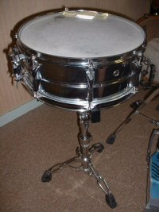

The snare drum (or side drum) is a percussion instrument that produces a sharp staccato sound when the head is struck with a drum stick, due to the use of a series of stiff wires held under tension against the lower skin. Snare drums are often used in orchestras, concert bands, marching bands, parades, drumlines, drum corps, and more. It is one of the central pieces in a drum set, a collection of percussion instruments designed to be played by a seated drummer and used in many genres of music. Because basic rhythms are very easy to learn to play on a snare drum even for children, the instrument is also suitable for the music education for young children and a rhythm band.
Snare drums are usually played with drum sticks, but other beaters such as the brush or the rute can be used to achieve different tones. The snare drum is a versatile and expressive percussion instrument due to its sensitivity and responsiveness. The sensitivity of the snare drum allows it to respond audibly to the softest strokes, even with a wire brush. It can be used for complex rhythmic patterns and engaging solos at moderate volumes. Its high dynamic range allows the player to produce powerful accents with vigorous strokes and a thundering crack when rimshot strokes are used.
The snare drum seems to have descended from a medieval drum called the tabor, which was a drum with a single-gut snare strung across the bottom. It is a little bigger than a medium tom and was first used in war, often played with a fife (pipe); the player would play both the fife and drum (see also Pipe and tabor).Tabors were not always double-headed and not all may have had snares. By the 15th century, the size of the snare drum had increased and had a cylindrical shape. This simple drum with a simple snare became popular with the Swiss mercenary troops who used the fife and drum from the 15th to 16th centuries. The drum was made deeper and carried along the side of the body. Further developments appeared in the 17th century, with the use of screws to hold down the snares, giving a brighter sound than the rattle of a loose snare. During the 18th century, the snare drum underwent changes which improved its characteristic sound. Metal snares appeared in the 20th century. Today the snare drum is used in jazz, pop music and modern orchestral music.
Much of the development of the snare drum and its rudiments is closely tied to the use of the snare drum in the military. In his book, The Art of Snare Drumming, Sanford A. Moeller (of the "Moeller Method" of drumming) states, "To acquire a knowledge of the true nature of the [snare] drum, it is absolutely necessary to study military drumming, for it is essentially a military instrument and its true character cannot be brought out with an incorrect method. When a composer wants a martial effect, he instinctively turns to the drums."
Snare drumheads were originally made from calfskin. The invention of the plastic (Mylar) drumhead is credited to a drummer named Marion "Chick" Evans, who made the first plastic drumhead in 1956.
Drum rudiments seem to have developed with the snare drum; the Swiss fife and drum groups are sometimes credited with their invention.The first written rudiment was drawn up in Basel, Switzerland in 1610.Rudiments with familiar names—such as the single paradiddle, flam, drag, ratamacue, and double stroke roll, also called the "ma-ma da-da" roll—are listed in Charles Ashworth's book in 1812.
Marching snares are typically 12 in (30 cm) deep and 14 in (36 cm) wide. The larger design allows for a deeper-sounding tone, one that is effective for marching bands.Many marching snares are built to withstand high amounts of tension, tightened by a drum key. They are often played with a heavier and thicker stick, more commonly referred to as "marching sticks". Snares are often nylon or gut.
Similar to a marching snare, pipe band snares are deep and tuned quite tightly. The major difference is that they feature a second set of snare wires beneath the batter head, along with the normal set on the resonant head.This gives them an even more crisp and snappy sound. Snare drummers form an integral part of pipe bands, accompanying the bagpipes, and playing music written to fit the pipe tunes. A bass drummer and several tenor drummers, who also perform visual representations of the music, known as flourishing, add to the percussion section of a pipe band. The music played by pipe band snare drummers can be technically difficult, and requires a high degree of rudimental ability, similar to that of marching bands. Pipe Band snare normally use the traditional grip.
Drum kit snares are usually about a third to half the depth of a marching snare. They are typically 14 in (36 cm) in diameter and 5, 5+1⁄2, 6, 6+1⁄2 or 7 in (13, 14, 15, 17 or 18 cm), with 8 in (20 cm) depths also available.Typically uses coiled metal snare wires.
The piccolo snare is a type of snare used by drummers seeking a higher-pitched sound from their snare. Because the piccolo snare has a narrower depth than that of the marching snare or set snare, a higher-pitched "pop" is more widely associated with it. Although the piccolo snare has a more distinctive, unique sound, it has some downsides. Because of the "sharper" sound of the piccolo, its sound travels further and is picked up by microphones further away during recording, making it difficult to record effectively.There are many kinds of piccolo snare which can be piccolos, including the popcorn, soprano and standard snares. Popcorn snares typically have a diameter of 10 in (25 cm), sopranos 12–13 in (30–33 cm), and standard piccolos 14 in (36 cm).A well-known user of the piccolo snare was Neil Peart, the drummer of Rush, who used a 13 in (33 cm) X Shell Series Piccolo.
Here's how snare sounds!!